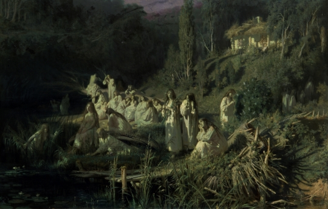
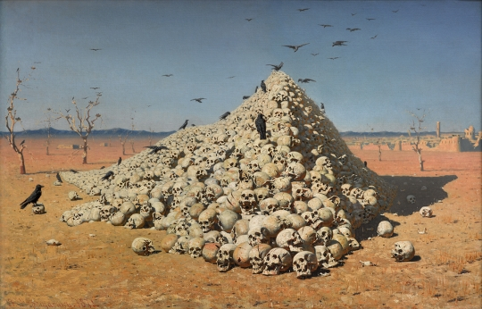
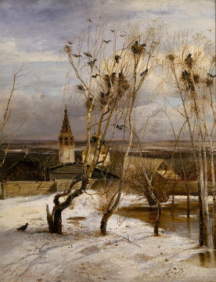
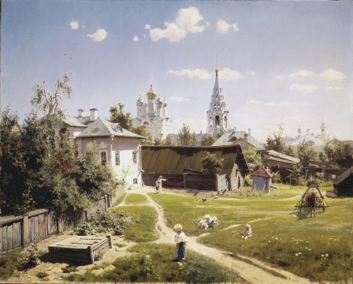
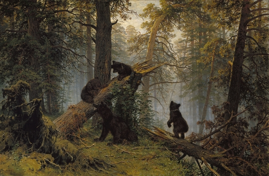
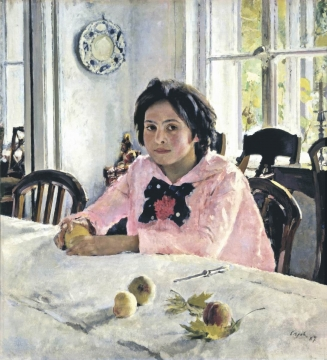
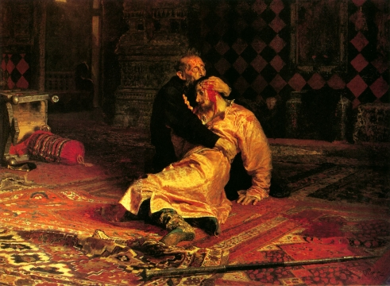
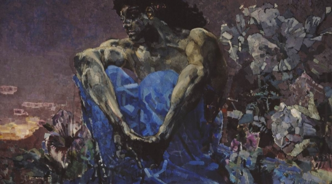
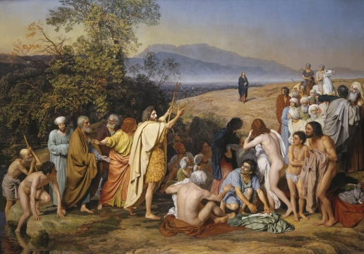

Иван Крамской. «Русалки», 1871 г.

Иван Крамской в первую очередь известен как автор картины «Неизвестная» (ее часто ошибочно называют «Незнакомка»), а также целого ряда прекрасных портретов: Льва Толстого, Ивана Шишкина, Дмитрия Менделеева. Но детям лучше начинать знакомство с его творчеством с волшебной картины «Русалки», с которой связана вот какая история.
В августе 1871 года художник Иван Крамской гостил в загородном имении своего знакомого, любителя искусства и знаменитого мецената Павла Строганова. Гуляя по вечерам, он любовался луной и восхищался ее волшебным светом. Во время этих прогулок художник решил написать ночной пейзаж и постараться передать все очарование, все волшебство лунной ночи, «поймать луну» — по его собственному выражению.
Крамской приступил к работе над картиной. Появились берег реки в лунную ночь, пригорок и домик на нем, окруженный тополями. Пейзаж был прекрасен, но чего-то не хватало — волшебство на холсте не рождалось. На помощь художнику пришла книга Николая Гоголя «Вечера на хуторе близ Диканьки», точнее история под названием «Майская ночь, или Утопленница» — сказочная и немного жутковатая. И вот на картине появились девушки-русалки, освещенные лунным светом.
Художник так тщательно работал над картиной, что она стала ему сниться и ему постоянно хотелось что-то в ней доделать. Спустя год после того, как ее купил основатель Третьяковской галереи — Павел Третьяков, — Крамской в очередной раз захотел что-то в ней изменить и вносил небольшие правки прямо в выставочном зале.
Полотно Крамского стало первой «сказочной» картиной в истории русской живописи.
Василий Верещагин. «Апофеоз войны», 1871 г.

Так сложилось, что люди воевали всегда. Испокон веков отважные вожди и могущественные правители снаряжали свои армии и отправляли их на войну. Конечно же, они хотели, чтобы об их военных подвигах узнали далекие потомки, поэтому поэты слагали стихи и песни, а художники создавали прекрасные картины и скульптуры. На этих картинах война обычно походила на праздник — яркие краски, бесстрашные воины, идущие в бой…
Художник Василий Верещагин знал о войне не понаслышке — он не раз принимал участие в боях — и написал множество картин, на которых изобразил то, что видел собственными глазами: не только бравых солдат и их военачальников, но и кровь, боль и страдание.
Однажды он задумался о том, как показать в одной картине все ужасы войны, как дать зрителям понять, что война — это всегда горе и смерть, как дать другим взглянуть на ее отвратительные подробности? Он понял, что недостаточно написать картину с полем боя, усеянным погибшими воинами, — такие полотна были и раньше. Верещагин придумал символ войны, образ, только взглянув на который, каждый сможет представить, насколько страшна любая война. Он написал выжженную пустыню, посреди которой возвышается пирамида из человеческих черепов. Вокруг — лишь сухие, безжизненные деревья, и только воронье слетается на свой пир. Вдалеке виднеется полуразрушенный город, и зритель с легкостью может догадаться, что и там жизни больше нет.
Алексей Саврасов. «Грачи прилетели», 1871 г.

Картину «Грачи прилетели» все знают с детства, и наверняка каждый писал по ней школьные сочинения. И сегодня учителя обязательно расскажут детям про лирические пейзажи Саврасова и про то, что уже в самом названии этой картины слышится радостное предвестие утра года и все в ней исполнено глубокого, близкого сердцу смысла. Между тем, мало кто знает о том, что знаменитых «Грачей…», равно как и всех остальных работ Саврасова, могло и вовсе не быть.
Алексей Саврасов был сыном мелкого московского галантерейщика. Желание мальчика заниматься живописью не вызывало у родителя восторга, но тем не менее в Московское училище живописи и ваяния Кондрат Саврасов сына отпустил. И учителя, и одноклассники признавали талант юного художника и прочили ему великое будущее. Но сложилось так, что, не проучившись и года, Алексей, по-видимому, из-за болезни матери, был вынужден прекратить учебу. Его преподаватель Карл Рабус обратился за помощью к обер-полицмейстеру Москвы генерал-майору Ивану Лужину, который помог талантливому юноше получить художественное образование.
Если бы Лужин не принял участия в судьбе молодого художника, одна из самых известных картин в истории отечественной живописи никогда не появилась бы на свет.
Василий Поленов. «Московский дворик», 1878 г.

Иногда, для того чтобы написать прекрасную картину, художник много путешествует, долго и придирчиво ищет самые красивые виды, в конце концов, находит заветное место и раз за разом приходит туда с этюдником. А бывает и так, что для того, чтобы создать замечательную работу, ему достаточно просто подойти к собственному окну, взглянуть на совершенно обычный московский дворик — и случается чудо, появляется удивительный пейзаж, наполненный светом и воздухом.
Именно такое чудо произошло с художником Василием Поленовым, который выглянул из окна своей квартиры в начале лета 1878 года и довольно быстро написал увиденное. Легко скользят по небу облака, все выше поднимается солнце, нагревая своим теплом землю, зажигая блеском купола церквей, укорачивая густые тени... Казалось бы — незамысловатая картина, к которой сам художник поначалу серьезно не относился: написал и почти забыл о ней. Но тут его пригласили принять участие в выставке. Ничего значительного у него не оказалось, и Поленов решил выставить «Московский дворик».
Как ни странно, именно эта «незначительная картинка» принесла Василию Поленову известность и славу — ее полюбили и публика, и критики: в ней есть и тепло, и яркие краски, а ее героев можно рассматривать бесконечно, придумывая историю про каждого из них.
Иван Шишкин. «Утро в сосновом лесу», 1889 г.

«Утро в сосновом лесу» Ивана Шишкина — наверное, самая знаменитая картина из коллекции Третьяковской галереи. В нашей стране ее знают все, благодаря репродукциям в школьных учебниках, а может, благодаря шоколадным конфетам «Мишка косолапый».
Но далеко не всем известно, что сам Шишкин написал только утренний лес в туманной дымке, а к медведям отношения не имеет. Эта картина — плод совместного творчества Шишкина и его друга, художника Константина Савицкого.
Иван Шишкин был непревзойденным мастером изображать всякие ботанические тонкости — критик Александр Бенуа его изрядно ругал за пристрастие к фотографической точности, называл его картины безжизненными и холодными. А вот с зоологией художник не дружил. Рассказывают, что именно поэтому Шишкин обратился к Савицкому с просьбой помочь ему с медведями. Савицкий приятелю не отказал, но всерьез к своей работе не отнесся — и подпись ставить не стал.
Позже Павел Третьяков приобрел это полотно у Шишкина, и художник предложил Савицкому оставить подпись на картине — все-таки они вместе над ней работали. Савицкий так и сделал, однако Третьякову это не понравилось. Заявив, что картину он покупал у Шишкина, а про Савицкого и знать ничего не желает, потребовал растворитель и собственными руками удалил «лишнюю» подпись. Так и получилось, что сегодня в Третьяковской галерее указывают авторство только одного художника.
Виктор Васнецов. «Богатыри», 1898 г.

Самым «сказочным» художником в истории русской живописи считается Виктор Васнецов — именно его кисти принадлежат такие известные работы, как «Аленушка», «Витязь на распутье», «Богатырский скок» и многие другие. Но самая его известная картина — «Богатыри», на которой изображены главные герои русских былин.
Сам художник описывал картину так: «Богатыри Добрыня, Илья и Алеша Попович на богатырском выезде — примечают в поле, нет ли где ворога, не обижают ли где кого?».
Посередине на вороном коне Илья Муромец, смотрит вдаль из-под ладони, в одной руке у богатыря копье, в другой булатная палица. Слева на белом коне Добрыня Никитич, вынимает меч из ножен. Справа на коне рыжей масти Алеша Попович, держит в руках лук со стрелами. С героями этой картины — точнее с их прообразами — связана любопытная история.
Виктор Васнецов долго думал, как должен выглядеть Илья Муромец, и долго не мог найти «правильное» лицо — смелое, честное, выражающее одновременно и силу, и доброту. Но однажды совершенно случайно он встретился с крестьянином Иваном Петровым, который приехал в Москву на заработки. Художник был поражен — на московской улице он увидел настоящего Илью Муромца. Крестьянин согласился позировать Васнецову и… остался в веках.
В былинах Добрыня Никитич довольно молод, но на картине Васнецова почему-то изображен человек средних лет. Почему же художник решил столь вольно поступить с народными сказаниями? Разгадка проста: в образе Добрыни Васнецов изобразил себя, достаточно сравнить картину с портретами и фотографиями художника.
Валентин Серов. «Девочка с персиками. Портрет В. С. Мамонтовой», 1887 г.

«Девочка с персиками» — один из самых известных портретов в истории русской живописи, написанный художником Валентином Серовым.
Девочка на портрете — Верочка, дочь мецената Саввы Мамонтова, в доме которого художник часто бывал. Интересно, что персики, лежащие на столе, не были привезены из теплых краев, а выросли неподалеку от Москвы, прямо в усадьбе Абрамцево, что в XIX веке было делом совсем необычным. У Мамонтова работал садовник-волшебник — в его умелых руках фруктовые деревья цвели даже в феврале, а урожай собирали уже в начале лета.
Благодаря серовскому портрету, Вера Мамонтова вошла в историю, но сам художник вспоминал, каких трудов стоило ему уговорить позировать 12-летнюю девочку, которая отличалась на редкость непоседливым характером. Серов работал над картиной почти месяц, и каждый день Вера по несколько часов смирно сидела в столовой.
Труды оказались не напрасными: когда художник представил портрет на выставке, картина очень понравилась публике. И сегодня, спустя более ста лет, «Девочка с персиками» восхищает посетителей Третьяковской галереи.
Илья Репин. «Иван Грозный и сын его Иван 16 ноября 1581 года», 1883–1885 гг.

Разглядывая ту или иную картину, нередко задаешься вопросом, что послужило источником вдохновения для художника, что подтолкнуло его написать именно такую работу? В случае с картиной Ильи Репина «Иван Грозный и сын его Иван 16 ноября 1581 года» догадаться об истинных причинах совсем непросто.
На картине изображен легендарный эпизод из жизни Ивана Грозного, когда он в припадке гнева нанес смертельный удар своему сыну царевичу Ивану. Впрочем, многие историки считают, что на самом деле убийства не было и царевич умер от болезни, а вовсе не от руки своего отца. Казалось бы, что может заставить художника обратиться к подобному историческому эпизоду?
Как вспоминал сам художник, мысль написать картину «Иван Грозный и сын его Иван» появилась у него после… концерта, на котором он услышал музыку композитора Римского-Корсакова. Это была симфоническая сюита «Антар». Звуки музыки завладели художником, и он захотел воплотить в живописи настроение, которое создалось у него под влиянием этого произведения.
Но не только музыка стала источником вдохновения. Путешествуя по Европе в 1883 году, Репин посетил бой быков. Вид этого кровавого зрелища впечатлил художника, который писал о том, что, «заразившись… этой кровавостью, по приезде домой, сейчас же принялся за кровавую сцену “Иван Грозный с сыном”. И картина крови имела большой успех».
Михаил Врубель. «Демон сидящий», 1890 г.

Как иногда много значит название картины. Что видит зритель при первом взгляде на полотно Михаила Врубеля «Демон сидящий»? Мускулистый молодой человек сидит на скале и с печалью смотрит на закат. Но как только мы произносим слово «демон», сразу же возникает образ волшебного недоброго существа. Между тем демон Михаила Врубеля — это вовсе не злобный дух. Сам художник не раз говорил, что демон — дух «не столько злобный, сколько страдающий и скорбный, но при всем том дух властный, ...величавый».
Эта картина интересна своей живописной техникой. Художник наносит краску на холст не привычной кистью, а тонкой стальной пластиной — мастихином. Подобная техника позволяет соединять приемы живописца и скульптора, буквально «вылепливать» картину с помощью красок. Так достигается «мозаичный» эффект — создается впечатление, что небо, скалы, да и само тело героя не написаны краской, а выложены из тщательно отполированных, быть может, даже драгоценных камней.
Александр Иванов. «Явление Христа народу (Явление Мессии)», 1837–1857 гг.

Картина Александра Иванова «Явление Христа народу» — событие уникальное в истории отечественной живописи. О ней непросто говорить с детьми, особенно 6–7-летними, но увидеть это монументальное полотно, над которым художник работал более 20 лет и которое стало делом всей его жизни, они должны обязательно.
Сюжет картины основывается на третьей главе Евангелия от Матфея: Иоанн Предтеча, крестящий иудейский народ на берегу Иордана во имя ожидаемого Спасителя, вдруг видит идущим Того, во имя Которого он крестит людей. О композиционных особенностях картины, о ее символах и о художественном языке дети узнают позже. Во время первого знакомства стоит рассказать о том, как одна картина стала делом всей жизни художника.
После окончания учебы в петербургской Академии художеств Александр Иванов был отправлен «на стажировку» в Италию. «Явление Христа народу» должно было стать отчетным произведением. Но художник очень серьезно относится к своей работе: тщательно изучает Священное Писание, историю, месяцами находится в поисках нужного пейзажа, бесконечное количество времени ищет образ для каждого героя картины. Заканчиваются деньги, которые ему выделялись на работу, Иванов ведет нищенское существование. Кропотливая работа над картиной привела к тому, что художник испортил зрение и вынужден был долго лечиться.
Когда Иванов завершил свой труд, итальянская публика с восторгом приняла картину, это был один из первых случаев европейского признания русского художника. В России же ее оценили далеко не сразу — лишь после смерти художника к нему пришла настоящая слава.
Работая над картиной, Иванов создал более 600 эскизов. В зале, где она выставлена, можно увидеть некоторые из них. Интересно на этих примерах проследить, как художник работал над композицией, пейзажем, над образами героев картины.